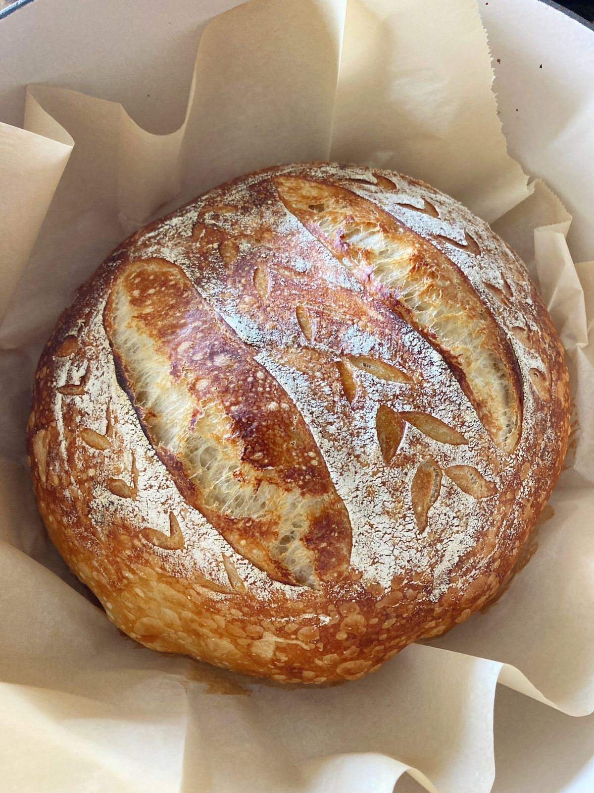
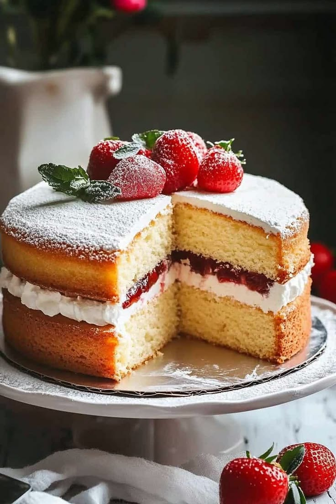
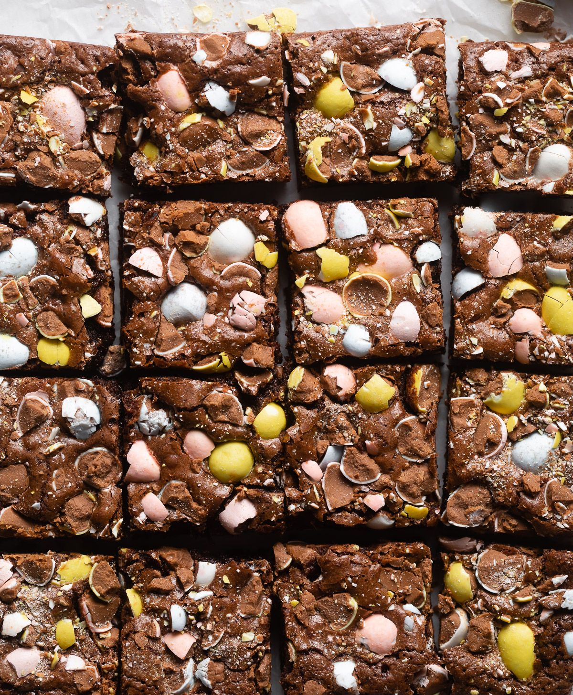
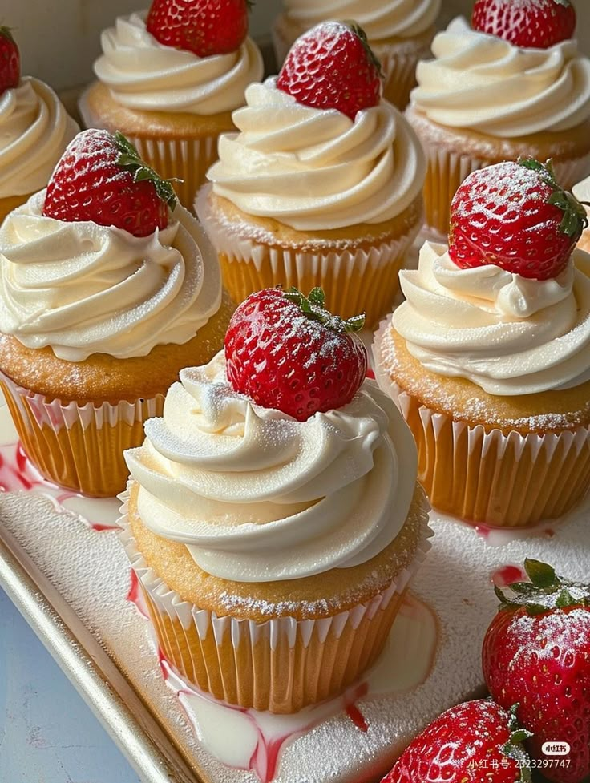

Our Picks

Bread
Full recipeBeginner Sourdough
Ingredients
- 150g active sourdough starter
- 250g warm water
- 25g olive oil
- 500g bread flour
- 10g fine sea salt
Process
- Mix starter, water, olive oil, flour, and salt into a rough dough.
- Rest the dough for 30 to 60 minutes.
- Cover and let it rise until puffy and nearly doubled.
- Shape into a round loaf.
- Bake in a Dutch oven for a crisp crust.

Cakes
Full recipeVictoria Sponge Sandwich
Ingredients
- 225g baking spread
- 225g caster sugar
- 4 eggs
- 225g self-raising flour
- 1 tsp baking powder
- Strawberry jam
- 300ml whipped double cream
Process
- Preheat oven and line two sandwich tins.
- Beat all sponge ingredients together until smooth.
- Divide into tins and bake until golden.
- Cool fully on a wire rack.
- Fill with jam and cream, then dust with sugar.

Traybakes
Full recipeMini Egg Brownies
Ingredients
- 200g dark chocolate
- 200g unsalted butter
- 4 medium eggs
- 275g light brown sugar or caster sugar
- 100g plain flour
- 50g cocoa powder
- 150g chocolate chips
- 250g mini eggs
Process
- Preheat oven and line a 9x9 tin.
- Melt chocolate and butter, then let it cool slightly.
- Whisk eggs and sugar until paler and doubled in volume.
- Fold in chocolate mixture, then flour and cocoa.
- Fold in chips and mini eggs, then bake for 25 to 30 minutes.

Cupcakes
Full recipeBasic Cupcakes
Ingredients
- 175g self-raising flour
- 110g caster sugar
- 1 tsp baking powder
- 110g soft margarine or butter
- 2 large eggs
- 50ml water or milk
- 170g softened butter
- 225g icing sugar
Process
- Preheat oven and line a cupcake tray.
- Mix the dry ingredients in a bowl.
- Add eggs and butter, then beat until combined.
- Add milk or water until the batter is light and creamy.
- Bake for 15 to 20 minutes and finish with buttercream.
Cookies
Full recipeNYC Chocolate Chip Cookies
Ingredients
- 125g unsalted butter
- 100g light brown sugar
- 75g white granulated sugar
- 1 medium egg
- 1 tsp vanilla
- 300g plain flour
- 1½ tsp baking powder
- ½ tsp bicarbonate of soda
- ½ tsp sea salt
- 300g chocolate chips
Process
- Cream the butter and sugars together.
- Beat in the egg and vanilla.
- Mix in flour, baking powder, bicarbonate of soda, and salt.
- Stir through the chocolate chips.
- Shape, chill, and bake until golden at the edges.